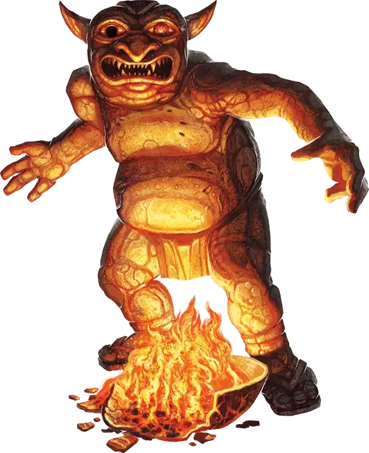

Священная статуя
Sacred Statue
Большой Конструкт, без мировоззрения

Класс Доспеха 19 (природный доспех)
Хиты 95 (10к10 + 40)
Скорость 25 футов
| мод | спас | ||
|---|---|---|---|
| СИЛ | 19 | +4 | +4 |
| ЛОВ | 8 | −1 | −1 |
| ТЕЛ | 19 | +4 | +4 |
| мод | спас | ||
|---|---|---|---|
| ИНТ | 14 | +2 | +2 |
| МДР | 19 | +4 | +8 |
| ХАР | 16 | +3 | +3 |
Сопротивление урону кислота, огонь, электричество; дробящий, колющий, рубящий от немагических атак
Иммунитет к состояниям окаменение, отравление, паралич, очарование, испуг, истощение
Чувства тёмное зрение 60 футов, пассивное Восприятие 14
Опасность 0
Бонус мастерства +2
Особенности
Мировоззрение эйдолона.
Языки. Языки, которые эйдолон знал при жизни.
Обманчивая внешность. Если статуя неподвижна в начале боя, она имеет преимущество в броске инициативы. Более того, если существо не наблюдало за движением или действием статуи, это существо должно преуспеть в проверке Интеллекта (Расследование) Сл 18, чтобы определить, что статуя не является объектом.
Призрачный обитатель. Эйдолон, вошедший в статую, остаётся в ней до того момента, пока статуя не опустится в 0 хитов. Бонусным действием эйдолон может покинуть статую, или эйдолон может быть силой изгнан из статуи эффектом, аналогичным эффекту заклинания рассеивание зла и добра [dispel evil and good].
Когда эйдолон покидает статую, он появляется в пределах 5 фт. от неё в свободном пространстве.
Неактивный. Когда в статуе нет эйдолона, она считается объектом.
Необычная природа. Статуя не нуждается в воздухе, пище, питье или сне.
Действия
Мультиатака. Статуя совершает две атаки Размашистым ударом или Камнем.
Размашистый удар. Рукопашная атака оружием: +8 к атаке, дистанция 10 фт., одна цель. Попадание: 43 (6к12 + 4) дробящего урона.
Камень. Дальнобойная атака оружием: +8 к атаке, дистанция 60/240 фт., одна цель. Попадание: 37 (6к10 + 4) дробящего урона.
Описание
У божеств есть много способов защитить места, которые они считают святыми. Одни из помощников, на которых они полагаются в этом, эйдолоны – призрачные духи, связанные священной клятвой защищать место, посвящённое своему божеству. Созданные из душ тех, кто доказал свою преданность, эйдолоны крадутся по храмам и склепам, по местам, где происходили чудеса и спрятаны реликвии, чтобы ни один из врагов не смог заполучить опору вопреки божествам, захватив, осквернив, или верша насилие в подобных местах. Если враг с такими намерениями вступает в защищённое место, эйдолон входит в высеченный сосуд – статую, специально приготовленную для размещения душ этих защитников.